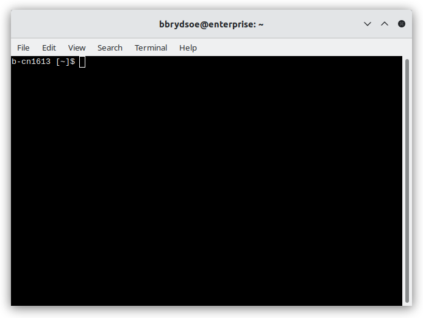
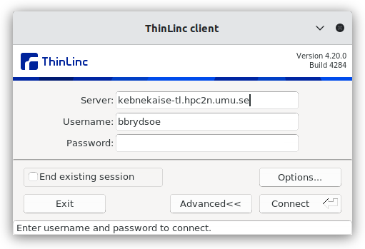

The command line interface and the shell¶
Learning objectives
Questions
- What is a Command Line Interface (CLI)?
- What is a shell?
- Why/when should I use it?
Objectives
- You will learn about the shell and the CLI.
- You will learn why and when you should use a CLI instead of a Graphical User Interface (GUI).

The picture above shows a terminal window where a user is logged into HPC2N’s Kebnekaise system. The prompt shows the node name of the login node (b-cn1613). Inside the terminal there is a shell running. One can see the prompt waiting for user input.
Some terminals shows the name of the user and/or the system logged into in the topbar, whle others, like this one, just shows the user and system name for the local computer (my home computer named “enterprise”).
This is an example of a command line interface (CLI). It allows a user to interact with the computer system by typing in commands directly. It is a user interface that is navigated with only a keyboard, instead of by clicking with a mouse or using a touchscreen.
A commandline interface is currently available in all major operating systems, including Windows, UNIX, Linux, and macOS.
Note
In Unix or Linux, the prompt may be shown as $, %, #, or > depending on the shell used and the system’s set-up. In addition it may show details such as the user name, the name of the system, or the position in the directory tree. The position in the file tree is commonly referred to as the PATH.
The prompt means the shell is waiting for input from you.
A common alternative to a CLI is a GUI (Graphical User Interface), which typically uses a mouse or similar for navigating. While a GUI is often more intuitive for a new user, the CLI is more powerful. Command line interfaces often give access to more capabilities than graphical user interfaces do. Many repetive tasks, which can be tedious in a GUI, can be easily automated in a shell with a CLI.
Shell¶
As mentioned in the intro, the shell is an interface between the keyboard and the computer’s operating system (OS), i.e., it takes input from the user via the keyboard and sends it to the OS, which then performs the actions requested.
In this course we will focus on the Bash (Bourne Again SHell). There are many alternatives and the commands can look quite different when using another shell than Bash. Bash is both a command-line interpreter providing a Command Line Interface (CLI) and a scripting language.
Writing scripts in a shell allows you to automate repetitive tasks or combine several tasks, making your workflow faster and more efficient. For example, if you want to iterate over many files, this can be done easily in the shell.
Warning
You will find that many/most commands in this course are prefaced with either $ or bbrydsoe@enterprise:~$ (my computer) or something like b-cn1613 [~]$ (Kebnekaise’s login node).
This is the prompt from the computer system, where $ just is the default (bash) prompt, and the others are examples of a prompt you may see when logged into a compute cluster (in this case Kebnekaise - home directory versus a project storage directory).
You can see an example of such a prompt in the picture a bit further up on the page, when a user with the user-id bbrydsoe is connected to HPC2N’s Kebnekaise system.
IMPORTANT
Do NOT copy the prompt if you are copying code snippets. It should not be included in the command.
Terminology¶
You may hear words such as shell, terminal, console, and command line interface. So what are the differences? Are they the interchangeable?
Short answer:
- terminal = text input/output environment
- console = physical terminal
- shell = command line interpreter
Slightly longer answer (CLICK to read)
- Console and terminal both originally referred to a device similar to a typewriter which was used to interact with the computer. It was sometimes called a teletypewriter (tty) or teleprinter.
- A terminal in Linux/Unix terminology is a device file (interface to a device driver) which implements some commands (read, write, and some more). Some terminal emulators (a.k.a. terminal applications): Xterm, Gnome terminal, Konsole, SSH, …
- A console is generally a terminal in the physical sense, i.e., often the primary terminal directly connected to a machine. On Linux the console appears as several terminals that can be switched between, and each of these can be named console, virtual console, virtual terminal, etc.
- A Command Line Interface (CLI) is an interface where the user types a command and then presses RETURN/ENTER to execute the command.
- A shell is the main interface seen by the user when they login. It is used to start other programs. It is a command-line shell, and there are many different ones, as mentioned earlier. Command-line shells include flow control constructs to combine commands. In addition to typing commands at an interactive prompt, users can write scripts.
Try it out¶
Exercise: Open a terminal
Do one of the following:
- Open a terminal on Kebnekaise
- Use an SSH client of your choice or ThinLinc. The server name differs between regular SSH and ThinLinc.
- Log in with your USERNAME (SSH):
- Log in with your USERNAME (ThinLinc) and this server:

- If you logged in with ThinLinc, open a terminal.
- Open a terminal on any other HPC system where you have an account.
- Open a terminal on your own computer.
Code-along: try a few commands
NOTE: These commands will all be described in more depth in the next section on Navigating the File System.
List some files and directories:
Create a file (name it anything - MYFILE.txt is just a placeholder):
Create a directory (name it anything you want - MYDIR is just a placeholder):
List your files and directories again:
Error messages¶
Error messages
If you mistype a command, or the program/script is not available, you will get an error message like the following (on Kebnekaise where my username is bbrydsoe):
it may look a little different depending on the system (e.g., on enterprise where username is bbrydsoe):
If you instead execute a command on a file which is not available (or not accessible, due to permissions), it will look something like this (you can also use ls to list a specific file):
bbrydsoe@enterprise:~$ ls myfile.c
ls: cannot access 'myfile.c': No such file or directory
bbrydsoe@enterprise:~$
If you do not have permission to open or modify a file, the error message will include the phrase Permission denied.
Keypoints
- A shell is a special user program. It is an interface between the keyboard and the operating system that takes input from the user and sends it to the OS, which then performs the actions requested.
- We will use
bashin this course. - You can run programs from the shell by entering commands at the command-line interface, or CLI.
- There are many advantages to using the shell, particularly the ability to automate repetitive tasks and combine smaller tasks in a script, as well as the speed of executing commands compared with the more resource-intensive GUI. The shell is also easier to use remotely.
- A difficulty with the shell can be finding out which commands exist and how to run them.